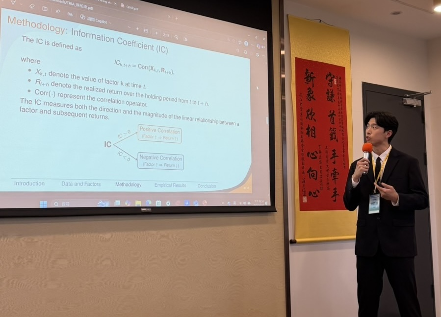

Research
My research interests lie in probabilistic generative modeling, especially diffusion-based models and their applications to financial markets and extreme events. I am interested in developing statistically grounded methods that support risk management and empirical asset pricing.
In Progress
- Bayesian Inference for Diffusion Models: Integrating Synthetic and Observed Data with Catalytic Priors
Published
- To be added.
Conference Presentations
-
Empirical Asset Pricing via Machine
Learning for Cryptocurrency
Authors: Po-Wei Chen, Li-Han Chang, Hung-Wen Cheng, and Pei-Jie Hsiao
2025 Annual Conference and International Symposium of the Taiwan Risk and Insurance Association (TRIA), Taipei, Taiwan.
[Slide]
Course Projects
-
Regression Analysis for Crime Rate in New York State
Course: Regression Analysis, Soochow University
Feb. 2025 – June 2025 -
Comparing Numerical Methods for Moment Calculation in the Bivariate Normal MGF
Course: Numerical Analysis, Soochow University
Feb. 2025 – June 2025 -
Factor Investing with Machine Learning
Course: Big Data and Fintech Practice, Soochow University
Feb. 2024 – June 2024